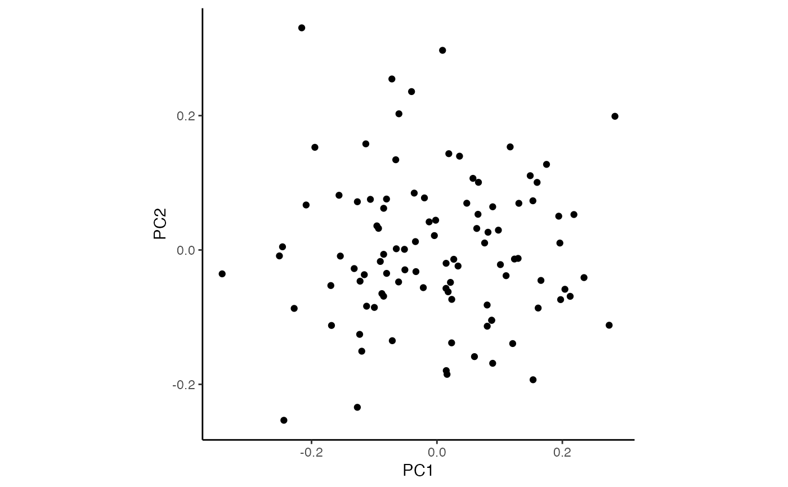

Compute variance stabilizing transform (VST) from precision weights by scaling each observation by their respective weights
Details
A variance stabilizing transform is usually described in terms of a parametric model of the observed data. Instead, here inverse variance of each observation are stored in x$weight and the VST divides the observed data by the scaled standard deviations
Examples
# set probability of each category
prob = c(0.1, 0.2, 0.3, 0.5)
# number of total counts
countsTotal = 300
# number of samples
n_samples = 100
# simulate counts from multinomial
counts = t(rmultinom(n_samples, size = countsTotal, prob = prob))
colnames(counts) = paste0("cat_", 1:length(prob))
rownames(counts) = paste0("sample_", 1:n_samples)
# run crumblr on counts
cobj = crumblr(counts)
# apply variance stabilizing transform (vst)
df_vst = vst(cobj)
# Perform PCA on VST transformed data
pca = prcomp(t(df_vst))
df_pca = as.data.frame(pca$x)
ggplot(df_pca, aes(PC1, PC2)) + geom_point() + theme_classic() + theme(aspect.ratio=1)
